PROJECT HIGHLIGHT
01. Stakeholder Interview・利益關係人需求訪談
為了釐清事業體的策略、目標以及該產品目前技術支援程度、商業與業務預期成效、指標，並整理出可執行的專案建議與先後順序；訪談了行銷長、該事業體的策略經理以及內部技術顧問。


02. Envision Workshops・品牌服務定位與定性工作坊
「品牌」是公司與顧客溝通的核心，如何有效的與目標族群溝通，提供相對應的需求與服務，並與公司的策略方向符合一致性是非常重要的；故，為了找出產品的服務定位、核心價值以及與關鍵客群的互動調性，透過工作坊的形式集結公司相關部門的利益關係人(執行長、技術長、行銷團隊、技術團隊、業務單位、設計單位)，讓大家互相合作、碰撞想法，最終產生大家都共識的產品服務定位與顧客溝通調性。


03. Project execution・專案執行過程
在上線時間極為急迫，公司尚未有充裕的內部資源的狀況下，透過以往的經驗協助團隊增加專案推進效率，並在專案執行期間推動與負責下列項目：
推動Scrum，擔任PO與Designer
進入專案後，因具體需求與技術都充滿不確定性，且上線時間又緊迫的情況下，毅然決然與團隊討論後推動Scrum的開發方式協助專案進行，並在專案中擔任Designer與Product Owner角色，與BU單位一起規劃產品功能以及擬定專案與時程、開發順序，並擔當部門間溝通與上下溝通的主要角色。
擔任外包廠商窗口
專案期間擔任「」、「」外包的主要處理窗口
設計與管理UX/UI設計品質
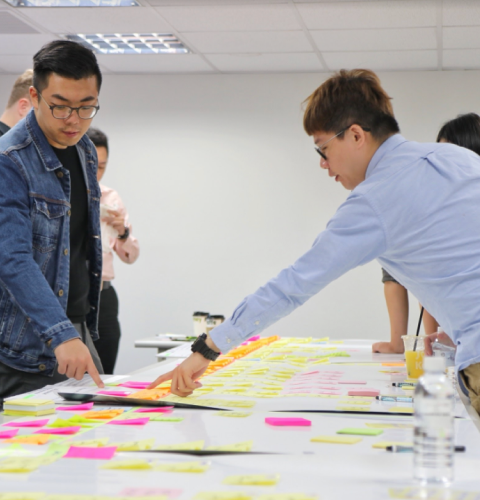
 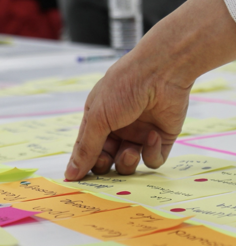
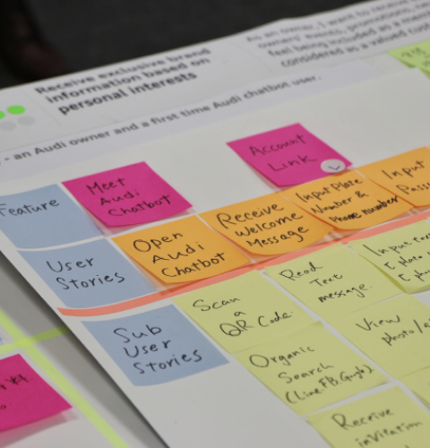
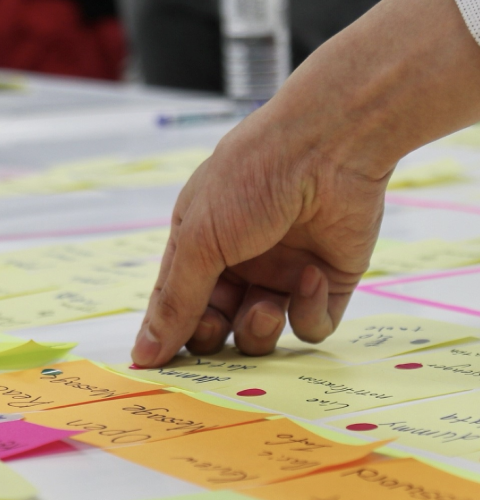
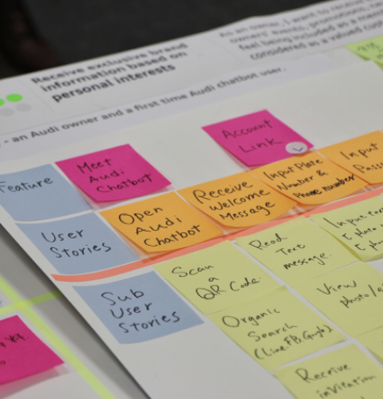
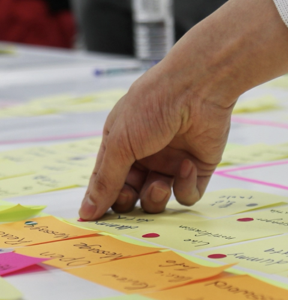
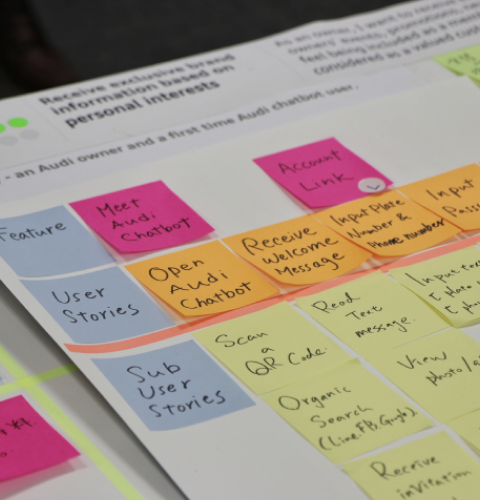
05. Marketing Activities・相關行銷活動
為了確保Chatbot的服務體驗與其他接觸點一致，我們透過下面幾個步驟，打造了全新的溝通調性來服務Audi顧客：
01. 在保留了Audi品牌原本的價值（Sophisticated、Energetic、Cool、Witty），與顧客期望的體驗（Thoughtful、Devoted、Reliable）雙向混合，並創造出Chatbot個性的基調。
02. 在這七個項目中依照Chatbot互動模式架構，將溝通語氣、招呼語、情緒反應、Emoji使用方式、資訊指引方式，這五大項拿捏出兩個不同的個性。
03. 進行用戶測試與調整，最終定讞出了Audi專屬的Chatbot角色個性。

 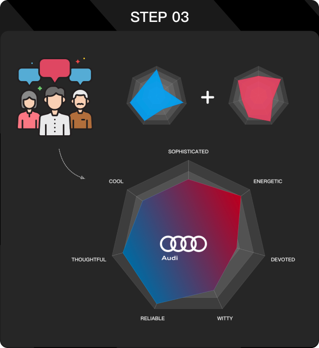
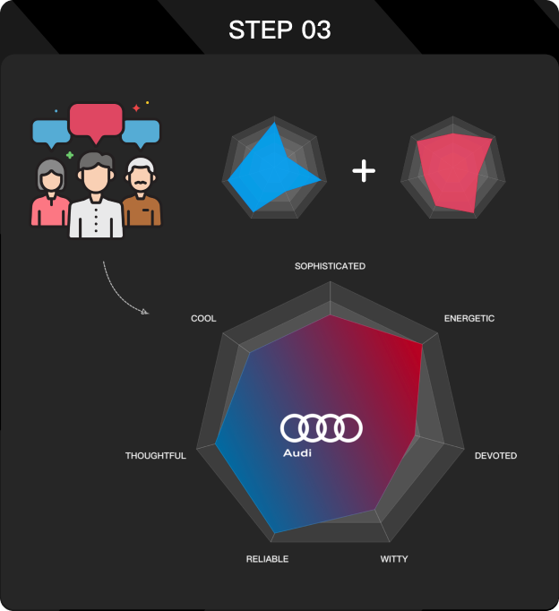
❮
❯


 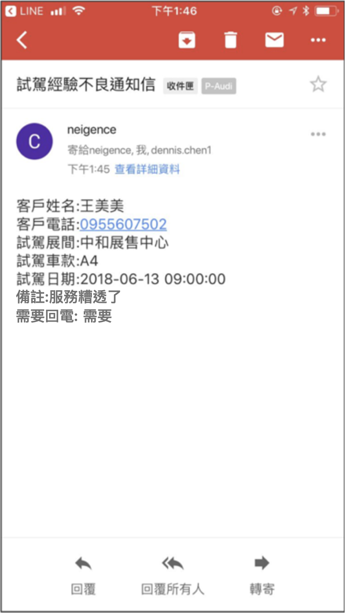
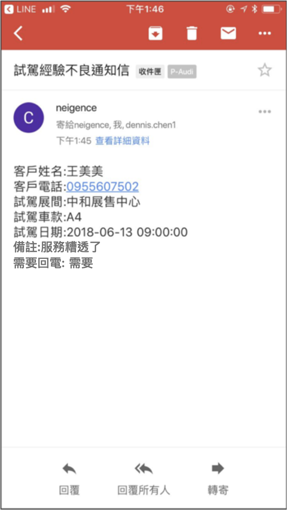